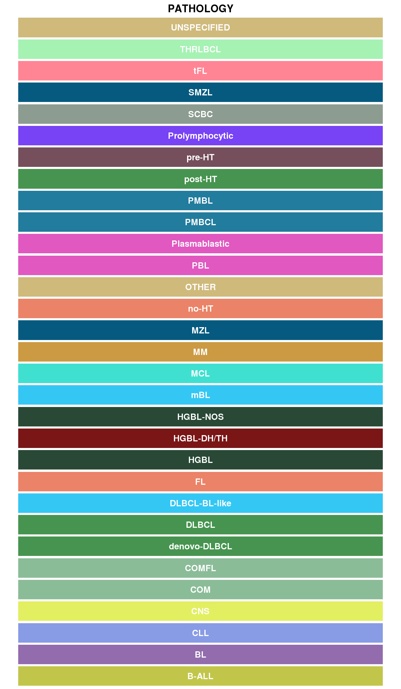
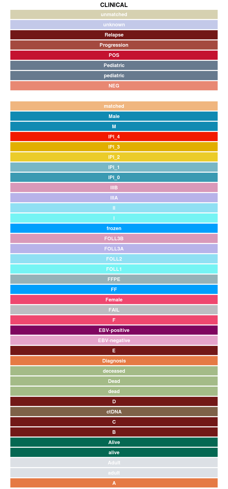
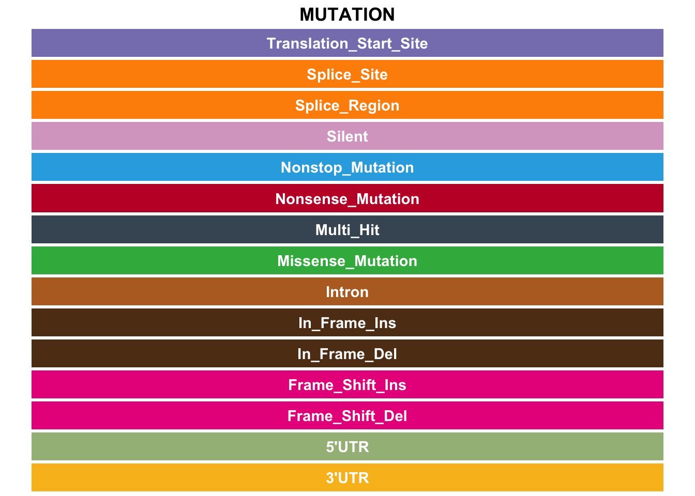

# Load packages
library(GAMBLR.data)
library(GAMBLR.helpers)
library(GAMBLR.viz)
library(tidyverse)Getting Started
This is a quick tour of some basic commands and usage patterns, just to get you started.
This tutorial explores how to generate some basic and most common plots, commonly occurring arguments across different functions, best practices and recommendations in the scope of visualizing data.
What are standartized colours?
First, let’s explore the standartized color pallettes in the GAMBLR.viz. They are stored as list in one of the GAMBLR.viz dependencies (GAMBLR.helpers) and are an integral part of visualizations. For demonstration purposes, we will obtain all of the standartized colours:
all_c <- get_gambl_colours(
as_dataframe = TRUE
)What are the colours available?
str(all_c)'data.frame': 268 obs. of 3 variables:
$ group : chr "seq_type" "seq_type" "seq_type" "type" ...
$ name : chr "mrna" "genome" "capture" "gain" ...
$ colour: chr "#E41A1C" "#377EB8" "#4DAF4A" "#0000FF" ...What are the colour groups?
table(all_c$group)
BL blood chapuy_classifier clinical
7 15 6 47
cohort coo copy_number EBV
16 12 17 4
FL genetic_subgroup hmrn indels
3 24 8 2
lacy_classifier lymphgen lymphgenerator mutation
8 14 10 13
pathology pos_neg rainfall seq_type
31 11 7 3
sex svs type
6 2 2 Many of these colours are conviniently provided for you to ensure consistency that is independent of formatting and case: for example, when the color for DLBCL COO is returned, the same color will be used for UNCLASS, U, UNC, Unclassified etc.
Just for the purpose of this guide, we will define a simple function to display some of these colour pallettes:
show_col <- function(data, group){
data %>%
filter(
!!sym("group") == {{group}}
) %>%
ggplot(
aes(
x = name,
y = 0,
fill = colour,
label = name
)
) +
geom_tile(width = 0.9, height = 1) +
geom_text(color = "white", fontface="bold") +
scale_fill_identity(guide = "none") +
coord_flip() +
theme_void() +
labs(title = toupper(group)) +
theme(plot.title = element_text(lineheight = 0.9,hjust=0.5,face="bold"))
}Hex codes for B-cell lymphomas
show_col(all_c, "pathology")
Hex codes for genetic subgroups
show_col(all_c, "genetic_subgroup")
Hex codes for clinical variables
show_col(all_c, "clinical")
Hex codes for Mutation types
show_col(all_c, "mutation")